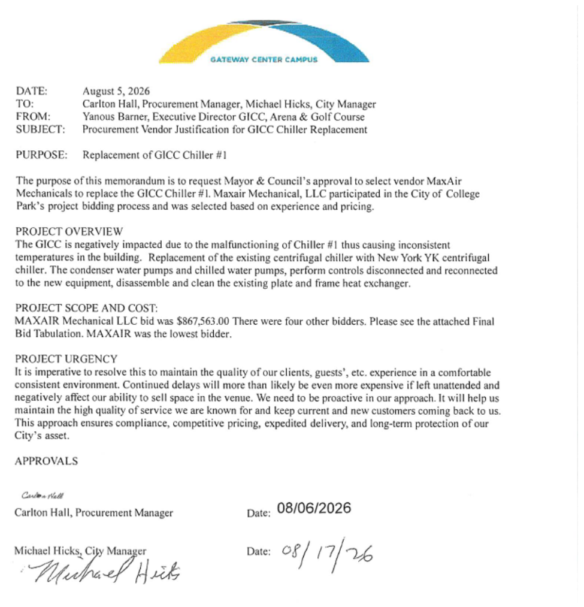
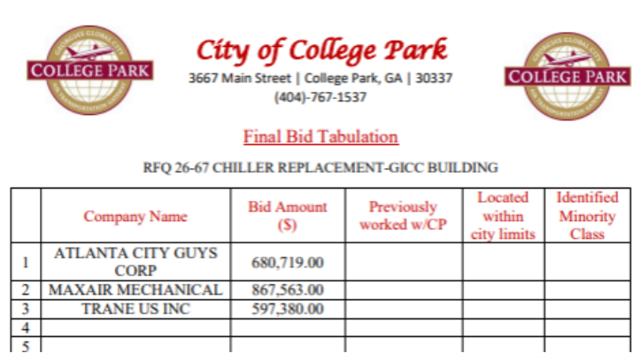

The $270,183
question.
The memo called MAXAIR the lowest bidder. The tabulation showed the highest price. Here’s how the council approved the item, and what remained unexplained.
Three respondents. Three prices.
Source: final bid tabulation reproduced in the Chiller email, p. 2. Bars start at zero. The difference alone does not establish equivalent proposals or overpayment.
Replacing Chiller No. 1 at the Georgia International Convention Center was presented as necessary to keep patrons comfortable and avoid lost business. The question was how the City selected the vendor. Follow these five moments from the meeting, then compare them with the documents.
First, a request to discuss it separately.
During agenda changes, Mayor Bianca Motley Broom raises the memo’s timing and asks to move Item 9A from the consent agenda to regular business. A motion is made. No second follows, so it dies and the item stays on consent.
“Let’s move it to the regular and have a discussion so that we could get the documents straight.”Mayor Bianca Motley Broom · agenda changes
The motion was to move the item for discussion. Its failure was not a separate vote on the merits of the chiller purchase.
A question before the vote. No explanation offered.
As the meeting reaches the consent agenda, the mayor asks City Attorney Winston Denmark whether he received her emails and has any thoughts. He confirms receiving the email, says he was not involved in the transaction’s details, and says he has no answers.
This exchange does not resolve the memo’s date or the selection rationale. It also does not establish why the attorney had no answer.
There is brief confusion about whether Item 9A was moved. The correction is immediate: it remains on the consent agenda.
The item stays on consent. The agenda passes.
The clerk reads the request for MAXAIR Mechanical to replace Chiller No. 1 for an amount not to exceed $867,563. After the remaining consent items are read, the council approves the group of items. The chair announces that the vote is unanimous.
These are two separate excerpts; the intervening minutes contain the other consent items. Approval of the request is documented. This record does not establish the amount ultimately invoiced or paid.
Then the mayor puts the discrepancy on the record.
In her report, the mayor identifies the $270,183 difference, contrasts the memo’s “lowest bidder” statement with the tabulation, and says the memo was dated and signed before the solicitation went out. She says she has not received the explanation she requested.
The excerpts preserve surrounding context. Start and end points follow the timestamped meeting transcript; the full video remains available from every clip.
The paper trail starts 20 days earlier.
20 days separate the memo date and the public posting. Those dates require explanation; they do not, by themselves, prove that someone backdated a document.
See the signed justification memo

Document excerpt from page 1 of the supplied Chiller email. The memo requests Mayor and Council approval.
See the final bid tabulation

Document excerpt from page 2 of the supplied Chiller email.
What staff said in writing
In the September 21 email, Hall says this was a Request for Qualifications, so the recommendation was not necessarily based on lowest price. He identifies MAXAIR as the most qualified respondent and confirms three respondents. That gives a stated rationale, but the email does not show the comparative evaluation explaining it.
There is another distinction to clarify: the posted solicitation is titled “Request for Quote”, while the staff email describes a “Request for Qualifications.” The labels should be reconciled with the actual selection criteria.
What would answer the questions?
Explain the dates.
The memo’s preparation history and an explanation of why its date and signatures precede the solicitation’s publication.
Show the comparison.
The evaluation criteria, proposal scope differences, and documented reasons for choosing MAXAIR over the two lower-priced respondents.
Reconcile the records.
A correction or explanation for “lowest bidder,” the memo’s reference to four other bidders, and the Quote/Qualifications terminology.
Document the outcome.
The executed contract, any changes, and eventual invoices would establish what the City ultimately purchased and paid.
Sources & reading notes
- City of College Park meeting video, September 21, 2026. Clips above use one continuous source, with explicit start and end points.
- Timestamped transcript, retrieved from Council Watch’s meeting output. Automated transcription can contain spelling and speaker errors; the recording controls.
- Mayor’s meeting preview and linked Chiller email. The supplied four-page email contains the signed memo (p. 1), tabulation (p. 2), staff response (p. 3), and original questions (p. 4).
- City bid posting, No. 27-67 and posted solicitation.
Reviewed September 22, 2026. This walkthrough distinguishes what the meeting records, what the documents show, and what remains unestablished.